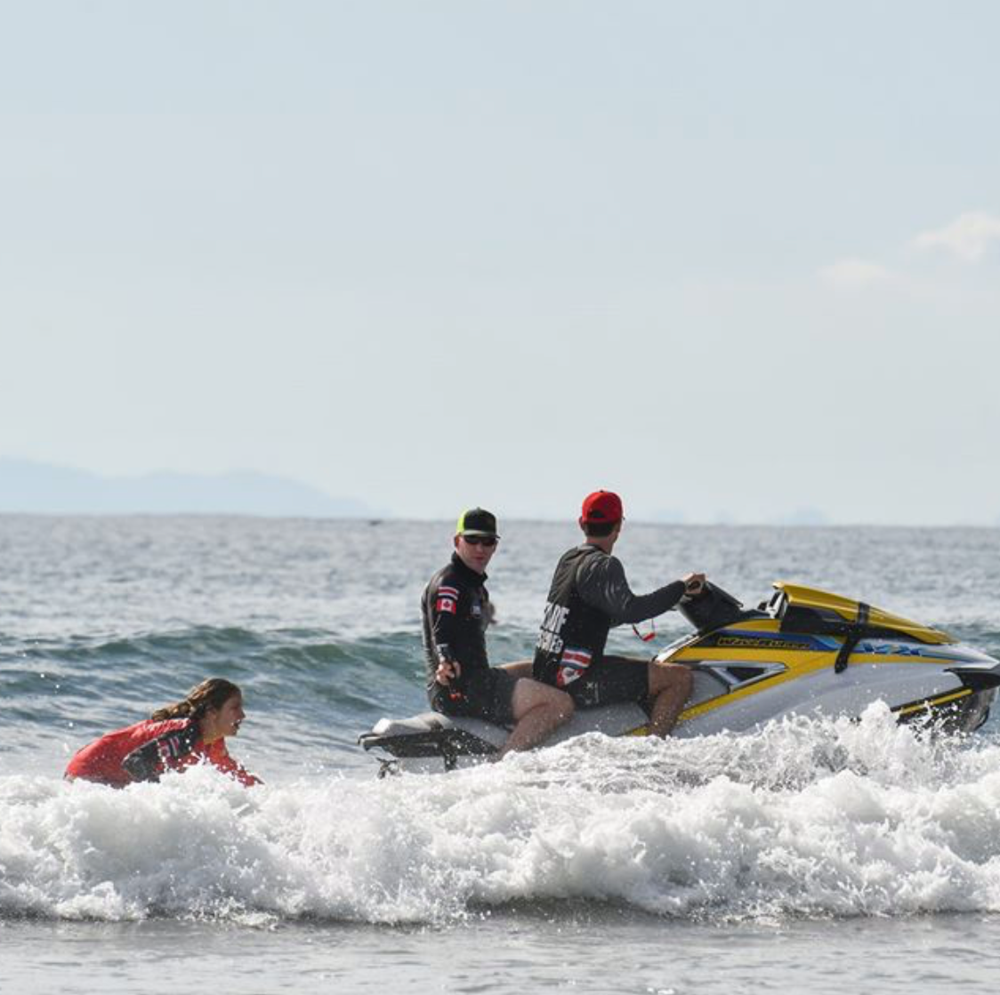
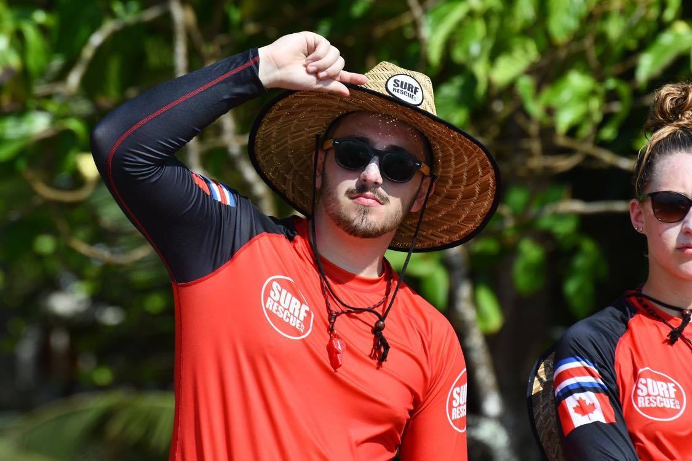

Challenges and Features
- Encrypted Database
- Interacts with the Google Maps API with its own API key
- Built in a two-day sprint as the final project for the class
- Incorporates many elements taught in the class such as recycler views for efficiency
A bit different than coding
As soon as I got to the legal working age, I started looking into fun jobs where I would be working with a team. This led me to become a daycamp monitor, which helped me grow as a person and was great fun. Working closely with the lifeguards, I knew I wanted that job to be my next step so I got it done pretty quick. Within less than a year, I became certified and I was working the next summer. I met some great friends, had some tough experiences and had an uneven tan for years.
After the first summer I loved my experience and wanted to take it further. I quickly became a swimming instructor. Used to working with people and with kids from previous experiences, I truly enjoyed this role and had some great students. Still needing to scratch an itch, I became an MS to teach higher level classes and train the teens who would become future lifeguards.
In 2019, I embarked on the ultimate experience. I left on a trip to Costa Rica with 36 other fellow lifeguards in order to become certified as ocean lifeguards. Tough on the body and on the soul, I came out of it with more experience, souvenirs that will last a lifetime and an amazing friend group. Coming back from the trip, I was promoted to head lifeguard for the summer of 2020.